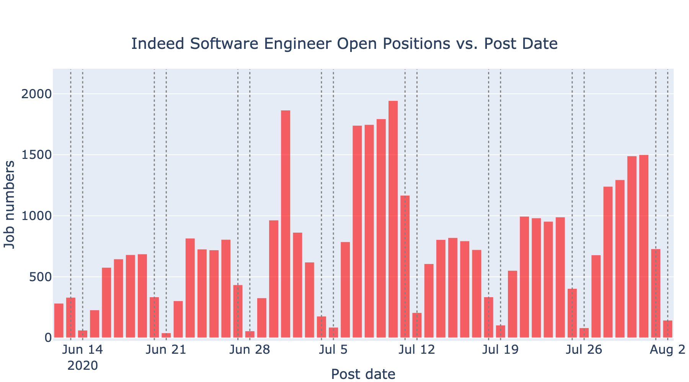

Time Series Data
Data Scientist (DS)
The following two figures show the number of daily posted open DS positions throughout the country from May 19th to August 2nd, 2020. Data was scraped from Indeed and LinkedIn websites respectively. The grey dashed lines indicate the weekends and holidays. As shown in the first figure, the number of posted DS jobs has a clear time dependent pattern with a periodicity of 7 days. This indicates that generally there are more DS jobs posted during the weekdays than the weekends. The fewer posted jobs at the weekends might not exactly be related to fewer open positions. It could be caused by the preferred days when the website updates its posted jobs. We also notice that there are fewer posted DS jobs in May and June. However, many DS jobs were posted on the Indeed website after the Independence Day long weekend, especially from July 6th to July 16th.
During the same time period, LinkedIn has posted a lot more open DS positions compared to the Indeed website. However, the number of daily posted DS jobs on the LinkedIn website does not have a discernible time dependent trend as shown in the second figure below. Some specific days have posted an extremely large number of DS jobs, such as June 1st, June 18th and June 27th.
Software Engineer (SDE)
We also plotted the time series trend of open SDE positions that were posted on the two websites. The following two figures show the number of daily posted open SDE positions throughout the country from June 12th to August 2nd, 2020. Data was scraped from Indeed and LinkedIn websites, respectively. The grey dashed lines indicate the weekends and holidays. In general, the number of daily posted SDE jobs from the two websites are a lot more than posted DS jobs, while the prior is about 10 times more than the latter. The posted SDE jobs from Indeed website have a similar time series pattern as DS jobs: more jobs were posted on the weekdays than on the weekends. During the week of July 6th, Indeed website not only has posted a lot of DS jobs, but also posted a lot of SDE jobs. However, the number of daily posted SDE jobs from LinkedIn website does not seem to have a clear periodic pattern. Most SDE jobs were posted on the LinkedIn website within the two weeks from July 7th to July 21st.

According to the above analysis, the number of daily posted DS and SDE jobs on Indeed website has a periodicity of 7 days. In fact, this periodic pattern is very helpful for time series data modeling and fitting. Some models are better for such time series data with a seasonal pattern, but some models can also be used to fit non-seasonal data. In the next part, we will use several different machine learning and deep learning models to train and fit the number of posted DS and SDE jobs on Indeed and LinkedIn websites, respectively. Then we will compare the fitting results of different models. In consideration of the recent COVID-19 pandemic, we will also add COVID-19 data as an impact factor into our models, and compare the fitting results before and after adding COVID-19 data. Lastly we will use the models to forecast the number of DS and SDE jobs that will be posted on the two websites for the upcoming week of August 2nd.
SARIMAX Model
In this section, we use Seasonality Autoregressive Integrated Moving Average (SARIMA) model to fit the posted open DS and SDE positions on Indeed and LinkedIn, respectively. SARIMA model is a commonly used time series model, which is an extension from ARIMA model. The main parameters in ARIMA model include p, d and q, while p represents the order of autoregressive model or the number of time lags, d represents the degree of differencing, and q represents the order of moving-average model. SARIMA model considers seasonality of the data by adding more parameters into the ARIMA model, which are P, D, Q and m. The parameters P, D and Q represent the regression, differencing and moving average coefficients of seasonality, respectively. m represents the number of data points in each period. Now SARIMA model encompasses both non-seasonal (p,d,q) and seasonal (P,D,Q,m) factors. SARIMA sometimes can also be called SARIMAX, because we can add external factors or eXogenous variables into the model which might influence the trend of time series data.
Indeed
Data Scientist (DS)
First we consider fitting the number of posted DS jobs on Indeed website using SARIMAX model. We regarded the number of posted jobs in the last 7 days as the testing data, and the rest as the training data. We considered the following four different cases with different eXogenous variables: (1) no eXogenous variables, (2) add weekends as eXogenous variables, (3) add COVID-19 fatality rates as eXogenous variables, and (4) add both weekend and COVID-19 fatality rates as eXogenous variables. For each case, first we used walking forward validation grid search to find the optimal parameters in the model, and root mean squared error (RMSE) was used as the measuring metric. The fitting results are shown in the following figure. The mean of testing data is 132.14, and the standard deviation is 80.14. The RMSEs for the four cases are: (1) 58.35, (2) 50.71, (3) 52.52, and (4) 37.16, respectively. As can be seen, the RMSE for the worst case is even lower than 50% of the mean, and also lower than the standard deviation of testing data. The fitting results indicate that the models are relatively well fitted to the training data.
In the second case, we added the weekends as eXogenous variables into the model. As a result, the RMSE decreased by nearly 14%, which is attributed to the seasonal pattern of our data. When we added COVID-19 fatality rates as eXogenous variables into the model, the RMSE also decreased by 10%, indicating that there is some correlation between COVID-19 fatality rates and the posted DS jobs on Indeed website. In the last case we added both COVID-19 fatality rates and weekends as eXogenous variables into the model. Consequently, the RMSE decreased by more than 35% compared to the model without any eXogenous variables. This large improvement is mainly a combined result of the seasonal pattern of posted DS jobs on Indeed website and the impact of COVID-19 to the overall job market.
Software Engineer (SDE)
We did similar modeling for posted SDE jobs on Indeed website using SARIMAX model, which is shown in the following figure. The mean of testing data is 1010.43, and the standard deviation is 507.52. As can be seen in the figure below, the models for the four cases are all fitted very well to the training data. The RMSEs of predicted job numbers are far below the mean of testing data, and even the worst case is only about 8% of the mean and 15% of the standard deviation of testing data. When we added weekends as eXogenous variables, RMSE increased by ~12% compared to the model with no eXogenous variables. When we added COVID-19 fatality rates as eXogenous variables into the model, RMSE also increased by ~18% compared to the model without any eXogenous variables. However, when we added both weekends and COVID-19 fatality rates as eXogenous variables into the model, RMSE slightly decreased by 6%. Nevertheless, the four models with different eXogenous variables are all well-fitted to the training data, because the curve of the predicted job numbers almost overlaps with the curve of the testing data.
Data Scientist (DS)
Next we use SARIMAX models to fit the number of posted DS jobs on LinkedIn website. Four different cases of eXogenous variables are considered. We splitted the data as training and testing data, with the last 7 days as the testing data and the rest as the training data. The mean of testing data is 530.86, and the standard deviation is 133.74. Walking forward validation grid search was used to find the optimal parameters with the lowest RMSE for each case. The fitting results are shown in the figure below. The RMSEs of the four cases are all lower than 20% of the mean of testing data, and are all lower than the standard deviation. This means that the fitting of these four models to our data are reasonable.
When we added the weekends as eXogenous variables into the model, RMSE largely increased by about 68% compared to the model without any eXogenous variables. In the previous job trend figures, we mentioned that the number of posted DS jobs on LinkedIn website does not display a clear seasonal pattern. This may explain why the model fitting became worse when we added weekends as eXogenous variables. When we added COVID-19 fatality rates as eXogenous variables into the model, the RMSE decreased by 10% compared to the model without any eXogenous variables. This might indicate that COVID-19 fatality rates have some impact on the number of posted DS jobs on LinkedIn website. However, when both COVID-19 fatality rates and weekends were added as eXogenous variables into the model, the RMSE was even higher, and the fitting appeared to be even worse. These modeling results show that SARIMAX models not only can be applied to time series data with a seasonal pattern, but also can be used to fit non-seasonal time series data.
Software Engineer (SDE)
We also did similar SARIMAX modeling of posted SDE jobs on LinkedIn website by considering four different cases of eXogenous variables. The fitting results are shown below. The mean of testing data is 2941.43, and the standard deviation is 836.42. As can be seen, the overall trend of the predicted job numbers is close to the testing data. Even in the worst case, the RMSE (373.40) is about 13% of the mean, and 45% of the standard deviation of the testing data. RMSEs increased when weekends or COVID-19 fatality rates were added as eXogenous variables into the model, which indicates that the weekends or COVID-19 fatality rates may not have a large impact on the number of posted SDE jobs on LinkedIn website.
LSTM Model
In addition to machine learning models, we can also use deep learning models to fit time series data. Long short-term memory (LSTM) is a very commonly used artificial recurrent neural network (RNN) architecture. RNN has a common problem when it is used to predict time series data, because RNN only uses data from the previous time point (t-1) to predict data in the current time point (t). Thus, for time series data with a long time interval or a long time lag, RNN tends to forget the very first data points, because some information is lost during each step of the neural network transmission. LSTM networks can solve the above problem. Unlike standard feedforward neural networks, LSTM has feedback connections. A common LSTM unit is composed of a cell, an input gate, an output gate and a forget gate. The forget gate mainly uses sigmoid function to determine which information needs to be stored or removed from the previous time point. Therefore, the cell remembers values over arbitrary time intervals and the three gates regulate the flow of information into and out of the LSTM cell. LSTM model is well suited for processing and predicting important events with long time intervals and long time lags in the time series data.
We attempted to fit the number of posted DS jobs on Indeed website using the LSTM model. Similarly, we splitted the data as training and testing data with the last 7 days as the testing data and the rest as the training data. We first used grid search to find the set of optimal parameters with the lowest RMSE. The parameters include the number of inputs, the number of neurons, activation function, batch size and epochs. The fitting result is shown in the figure below. Although the RMSE of LSTM model (51.39) is slightly larger than the best case of SARIMAX model (37.16), the LSTM model is already well fitted to the training data. In general, deep learning models require a large amount of data points as the training data. Although our training data only contains 69 data points, this fitting result has exceeded our previous expectations.
Similarly, we also did LSTM modeling of the posted SDE jobs on Indeed website. The fitting result is shown in the following figure. Although the RMSE of LSTM model (118.25) is also higher than that of SARIMAX model (60.85), the fitting result is already very good.
In fact, we also attempted to fit the posted DS and SDE jobs on the LinkedIn website using the LSTM model, but the models were under-fitted to the training data. Thus, we decided not to show the results here. There are two reasons that may cause the bad fitting results of LinkedIn data: (1) The number of posted DS or SDE jobs on the LinkedIn website does not have a strong time dependent trend, or a seasonal pattern. Therefore, it is not suitable for LSTM modeling. (2) The number of the training data is very small, which is insufficient to create complicated neural networks to fit non-seasonal time series data. For these non-seasonal time series data, VARMAX or SARIMAX models might be a better option.